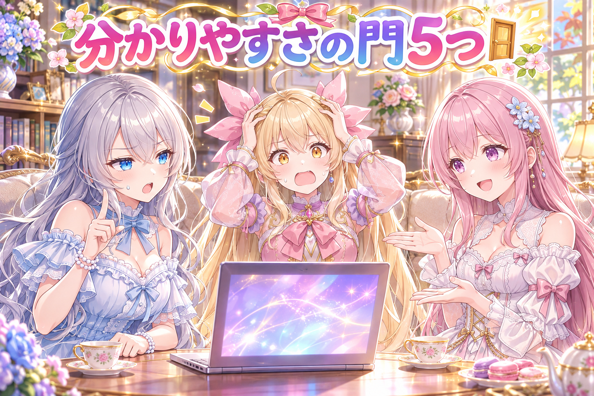
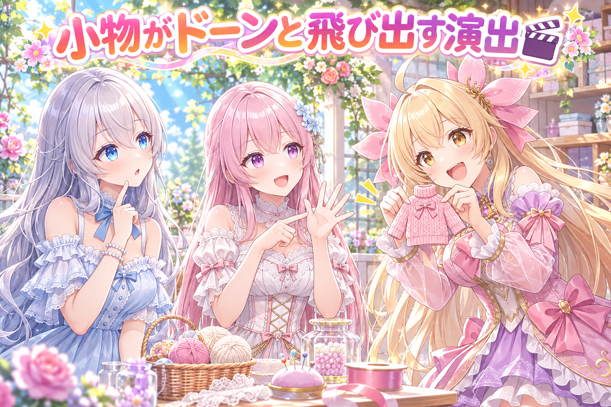
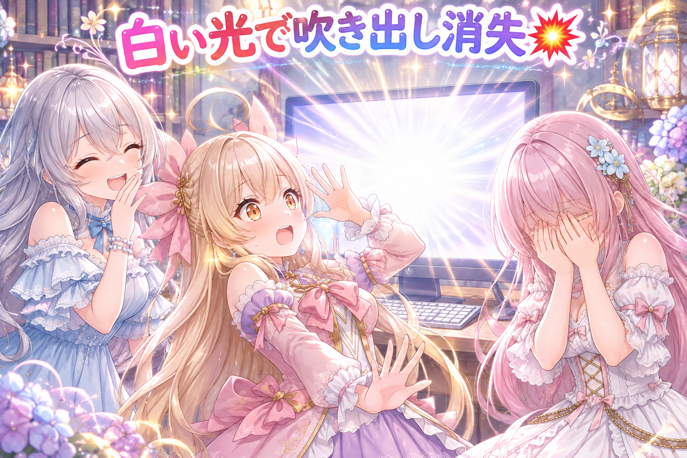
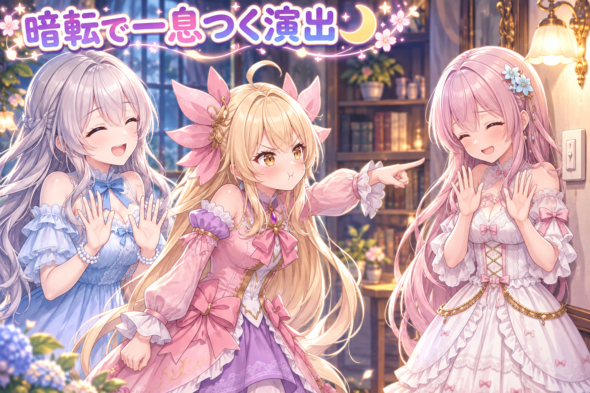
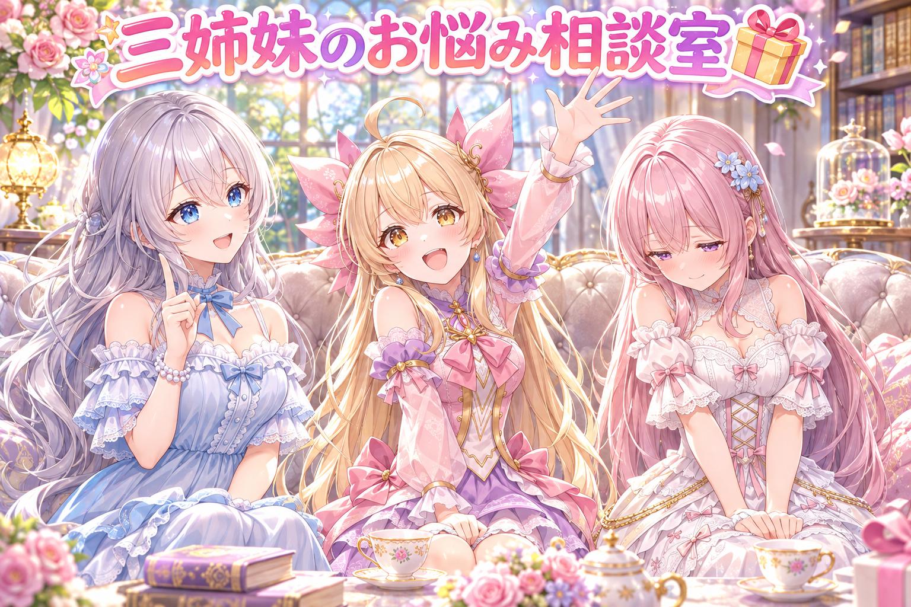

📌 3行まとめ
- パチンコ回とモノマネ回の台本を、前提知識ゼロでも楽しめるよう作り直し、分かりやすさのルール5つを機械が自動で確かめる門にした
- 物語の肝になる小物の絵を、場面に合った動きと効果音でドーンと見せるカットイン演出を新しく作り、本番の動画にも入れた
- 着地の白いフラッシュが吹き出しを消してしまう失敗や、縦型動画で絵がはみ出す問題を見つけて直した

ルピナス （笑顔）
こんにちは、AIBSのゆるっと制作日誌、今日も開店です。前回はみかん回を没にしたお話だったけど、今日はその続きの続き、みたいな回だよ。

アイリス （大笑い）
みかんの次は何が没になるの？あたしのおやつ？

フィオナ （ふつう）
アイリスちゃん、今日は没ではなく作り直しのお話です。台本を「誰にでも分かる」ように磨いた一日でした。

ルピナス （ウインク）
それと、小物がドーンと飛び出す新しい演出も。最後にはちょっと恥ずかしい失敗談もあるから、お楽しみにね。
1. 誰にでも分かる台本へ！分かりやすさの門5つ🚪

三姉妹のアニメ動画には、実際にホールで遊ぶパチンコ回と、有名な口調をまねて日常をこなすモノマネ回があります。でも振り返ってみると「専門用語が多い」「元ネタを知らないと笑えない」「なぜそうなるのか分からない」という弱点がありました。そこで、プロの放送作家さんたちのやり方を参考に台本の作り方を見直し、2本とも一から作り直しました。さらに、そのルールのうち5つを、台本ができた瞬間に機械が自動でチェックする『門』にしています。門自体も別の目で意地悪にレビューしてもらい、見逃しや誤検出を10件近く直しました。
ルピナス （ふつう）
じゃあ今日はクイズ形式でいこうか。第1問、動画の最初の十数秒でやらなきゃいけないことは何でしょう？

ルピナス （呆れ）
それは毎回やってるでしょ。不正解。

フィオナ （考え中）
正解は「今日の目的を台詞で言う」です。たとえば「今日は最後の千円で当たりを引くのが目標」と最初に言っておくと、見ている方は何を応援すればいいか分かるんです。

アイリス （びっくり）
あー、ゴールが見えてると、マラソンも頑張れるもんね。
ルピナス （笑顔）
そういうこと。第2問。難しい専門用語が出てきたら、すぐ後に何をする？

フィオナ （呆れ）
アイリスちゃん、それは視聴者さんが置いていかれます。正解は「やさしい言葉ですぐ言い換える」です。玉を「くじを引く券」みたいに言い換えるんですよ。
ルピナス （ふつう）
残りの3つも一気に言うね。同じ物の呼び名をゆらさない、1行に数字は1つまで、モノマネは誰のマネかを最初に言う。

アイリス （あわあわ）
待って、1行に数字1つ！？あたし「3時に5個のプリンを2人で」とか普通に言うよ！？
フィオナ （大笑い）
その文、まさに門に止められる見本です。聞いている途中で数字が渋滞してしまうんですね。

ルピナス （考え中）
ちなみに門を作ったあと、別の目で意地悪に点検してもらったら、引っかかるべき所を見逃したり、問題ない台詞を止めたりする穴が見つかったの。

フィオナ （ドヤ顔）
でも全部直しましたし、確かめる試験も付けました。もう門番さんは居眠りしません。
ルピナス （笑顔）
最後にボーナス問題。パチンコ回なのに、遊ぶ場面の背景が全部お店の外だった回がありました。どうなった？
アイリス （大笑い）
駐車場でエアパチンコ！最後の千円も休憩所で！
ルピナス （呆れ）
珍回答っぽいけど、それが本当に起きてたんだよね。だから「ホールの回は台の並ぶ店の中で遊ぶ」っていう門も足しました。
アイリス （衝撃）
あたしの珍回答、実話だったの！？
📝 ポイント（初心者向け解説・技術メモ・まとめ）
- 初心者向け解説：はじめて遊園地に来た友だちに、まず「今日はジェットコースターに乗るのが目標だよ」と伝えて、難しい言葉が出たらすぐ言い直してあげるイメージです。迷子にさせない優しい案内係を、台本の中に置いてあげる感じ🎡
- 技術メモ：台本の各行（話す人・表示する台詞・モノマネ役の情報）を読んで、冒頭数行に目的があるか、2回以上出る専門語の直後に言い換えがあるか、呼び名のゆれ、1行あたりの数字の数、モノマネ対象の早期提示を判定するゲートを実装。誤検出と見逃しは敵対的レビューで洗い出し、壊すと赤になる試験で固定した。背景が自動選択のときに場面と食い違わないよう、ジャンル別の背景ゲートも追加
- ひとことまとめ：分かりやすさは気合いではなく、機械が見張れるルールにすると崩れない
2. 小物がドーンと飛び出すカットイン🎬

会話アニメは立ち絵の掛け合いが中心なので、物語のカギになる小物（縮んだセーターなど）が言葉だけで流れてしまいがちでした。そこで、台本に印を付けた行で、小物だけを描いた絵を一瞬大きく見せる『カットイン』を自動で入れる仕組みを作りました。動き方は10種類あまりの型を棚にそろえて場面に合わせて選び、新しい型が生まれたら棚に追加。効果音も棚から選んで、絵が着地する瞬間に音の頭がぴったり合うようにしています。作った絵も棚に保存して、次の回で使い回せるようにしました。

アイリス （笑顔）
じゃあ実況しまーす！アイリス選手、縮んだセーターを持って画面の外からスタンバイ！
フィオナ （ふつう）
台本に印がある行に来ました。ここで棚から動きの型を選びます。今回は、横からスッと滑り込んでピタッと止まる型ですね。
アイリス （大笑い）
シュバッ！ピタッ！決まったー！

フィオナ （びっくり）
そしてピタッと止まった瞬間に、効果音の一番大きいところが重なります。ここがずれると、間の抜けた感じになってしまうんです。
ルピナス （考え中）
解説の人、ひとつ確認。吹き出しの上にセーターがかぶったらどうなるの？
フィオナ （ドヤ顔）
ご安心ください、お姉ちゃん。吹き出しのある場所を避けて置くようにしてあります。台詞が読めないのが一番困りますから。

アイリス （ドヤ顔）
完璧じゃん！もう全部の行にカットイン入れようよ！毎秒セーター！
ルピナス （呆れ）
それはもうセーターの通販番組だから。数と間隔はちゃんと整えるようにしてあります。

フィオナ （笑顔）
動画を仕上げる直前に絵を作って、出しすぎないよう数を調整しているんです。ここぞという時だけ出るから効くんですよ。

アイリス （しょんぼり）
毎秒セーター、夢だったのに……
ルピナス （ウインク）
その夢は胸にしまっておいて。でもね、このカットイン、本番で出す予定の回にも試しで3か所入れて、焼き直しまで進めたよ。
📝 ポイント（初心者向け解説・技術メモ・まとめ）
- 初心者向け解説：紙芝居の途中で、お話のカギになる宝物だけを描いた小さな絵を「じゃーん！」と前に出すような演出です。大事な物を一瞬だけ主役にしてあげると、見ている人の記憶に残ります✨
- 技術メモ：台本の cutin 印→画像生成AIで背景なしの小物単体の絵を作成し、素材棚に保存して再利用。動きは10種類あまりの型を棚化し、新しい型は棚に追加される設計。効果音は波形の立ち上がりを着地フレームに合わせる。画面効果の後のレイヤーとして重ね、吹き出し領域を回避。仕上げ直前に生成して数と間隔を調整し、試験20本前後で固定
- ひとことまとめ：見せ場は絵と動きと音の3つが同じ瞬間にそろうと気持ちいい
3. 👀 今日のやらかし

カットインを試しに焼いてみたら、絵が着地する瞬間に入れていた白いフラッシュが強すぎて、ちょうどそこにあった吹き出しまで真っ白に飛ばしてしまい、ほんの一瞬だけ台詞が読めなくなっていました。さらに、スマホ向けの縦型ショートでは横長の絵が画面の外にはみ出す問題も。どちらも直して、もう一度起きたら試験が赤くなるようにしています。ついでに、動画の題を変えたのに、画面に出す題の札だけ古い文字のままだった、という失敗も見つかりました。
アイリス （衝撃）
まぶしっ！って思ったら、台詞が消えてた！フラッシュに食べられた！

フィオナ （照れ）
すみません……着地をかっこよく見せたくて、白い光を思いきり強くしてしまったんです。吹き出しは避けたのに、光のほうが吹き出しに乗ってしまって。

ルピナス （大笑い）
セーターは吹き出しをよけたのに、光が遠慮なく突っ込んでいったのね。
アイリス （ドヤ顔）
でも一瞬でしょ？誰も気づかないって！
フィオナ （呆れ）
アイリスちゃん、その一瞬がちょうど大事な台詞だったんです。読めなかったら笑うところで置いていかれます。
ルピナス （ふつう）
だから今は、フラッシュが吹き出しを飛ばさないようにしてあります。で、次。縦型の動画では？
アイリス （大笑い）
セーターが横に長すぎて、画面からはみ出してた！セーターなのに袖が国境越えてた！
フィオナ （ふつう）
今は絵の長いほうの辺を、画面の横幅の8割ほどまでに縮めています。端に寄せる型のときは、内側に寄せるようにしました。
ルピナス （考え中）
で、最後の一つ。題を変えたのに、画面の題の札は古い字のままだったの。
アイリス （びっくり）
それ、名札だけ去年のクラスのまま、みたいなやつだ！
フィオナ （考え中）
札の文字を、いつも今の題に合わせるように直しました。……あの、ひとつ気づいたんですけど。
フィオナ （大笑い）
今日のやらかし、3つとも「見えるはずの物が見えない」話なんです。光で消えて、はみ出して消えて、古い字で本当の題が消えて。
アイリス （笑顔）
じゃあ今日のテーマは「消える魔術」だ！マジシャンデビュー！
ルピナス （呆れ）
動画でそのマジックは要らないの。タネは全部明かして片付けました。
📝 ポイント（初心者向け解説・技術メモ・まとめ）
- 初心者向け解説：記念写真でフラッシュを強くしすぎると、白い服がまっ白に飛んで模様が消えちゃいますよね。演出も同じで、目立たせたい物の隣にある大事な物まで消さないように気をつけるのがコツです📸
- 技術メモ：着地時の白フラッシュを吹き出し領域にかからないよう制御し、外すと赤になる試験を追加。縦型（ショート）では長辺を横幅の約82%に制限し、端寄せの型は内側へオフセット。題の札は生成時点の最新タイトルから描画するよう修正
- ひとことまとめ：試し焼きで目を凝らすと、一瞬の消失も見つかる
4. 場面転換は一息おいてから🌙

動画の途中に入るアイキャッチや、最後のエンディングに切り替わるところが「入り方が雑」と感じられていました。そこで、切り替わる手前で一息おいて映像を少し暗くし、BGMも止まる直前に1秒ほどかけてフェードアウトさせるようにしました。テレビ番組でCMに入る前の、あのふっと間がある感じを目指しています。

アイリス （ふつう）
ねえねえ、テレビってさ、CMの前にちょっとだけ静かになるよね。あれ、あたし好きなんだよね。
フィオナ （笑顔）
分かります。あの一瞬で「あ、ひと区切りなんだな」って心の準備ができるんですよね。
ルピナス （ふつう）
前は会話が終わった瞬間にいきなりアイキャッチだったから、急に電気を消されたみたいだったの。
アイリス （大笑い）
お風呂の電気いきなり消されるやつだ！あれ本気でびっくりするよね！
フィオナ （照れ）
……それ、この前わたしがやってしまったやつですね。ごめんなさい、アイリスちゃん。
ルピナス （笑顔）
動画のほうは、もう優しく暗くなって、音も1秒かけてそっと消えるようにしたからね。フィオナもお風呂の電気は優しく消そうね。
フィオナ （笑顔）
はい、次からは一息おいてから消します。

アイリス （呆れ）
一息おかれても消されるのは変わんないんだけど！？
📝 ポイント（初心者向け解説・技術メモ・まとめ）
- 初心者向け解説：お話の章が変わるとき、絵本ならページをめくる前にひと呼吸おきますよね。動画も、いきなり切り替えるより、少し暗くして音をそっと小さくすると、見る人がやさしく次へ進めます🌙
- 技術メモ：アイキャッチ・エンディング直前に短い間を挿入し映像をディップトゥブラック気味に暗転、BGMは停止の約1秒前からフェードアウト。急なカットによる違和感を軽減
- ひとことまとめ：切り替えは間とフェードで丁寧に
5. 🎁 お楽しみコーナー：三姉妹の相談室

今日のお悩みはこちら。『好きなことを人に説明すると、つい専門用語ばかりになって相手がぽかんとしてしまいます。どうしたら伝わりますか？』
アイリス （ドヤ顔）
はいはい！簡単だよ、勢いで押し切る！分かんなくても楽しそうなら伝わる！
ルピナス （考え中）
うーん、気持ちは伝わるかもしれないけど、中身は置いてけぼりかも。
フィオナ （ふつう）
わたしは、今日の門のルールがそのまま使えると思います。最初に「何がすごいのか」を一言で言って、難しい言葉が出たらすぐ言い換えるんです。
アイリス （あわあわ）
でもさ、言い換えてたら話が長くなって、相手が寝ちゃうかもじゃん！
フィオナ （照れ）
そ、それは……覚えてもらう言葉を3つまでに絞る、で解決できるはず、です……たぶん。
ルピナス （笑顔）
二人とも合ってるよ。私のおすすめは、まず相手に「どこまで知ってる？」って聞いてみること。相手の地図を見てから道案内すると、迷子になりにくいの。
アイリス （びっくり）
お姉ちゃん、急にいいこと言うじゃん……あたしの勢い作戦は？
ルピナス （ウインク）
勢いは、相手がちょっと分かってきてから使う奥の手ね。最後のひと押し用。
アイリス （笑顔）
やった、あたしの作戦、奥の手に昇格した！
ルピナス （ふつう）
みんなが好きなことを人に伝えるときの工夫も、ぜひコメントでこっそり教えてね。
6. 💐 今日のまとめ
- 「分かりやすさ」は、最初に目的・言い換え・数字は1行1つ、のように具体的なルールにすると機械で見張れる
- 小物のカットインは、絵と動きと効果音が同じ瞬間にそろうと見せ場になる
- 派手な演出ほど、隣にある台詞や画面の端を消していないか試し焼きで確かめる
- 夜明けまで頑張った日は、ちゃんと眠ってお水も飲んでね。休むのも制作のうちだよ
みんなは、何かを人に説明するとき、どんな工夫してる？
💬 コメント
お名前とコメントだけで送れるよ（承認されるとみんなに表示されます🌸）
コメントを読み込み中…